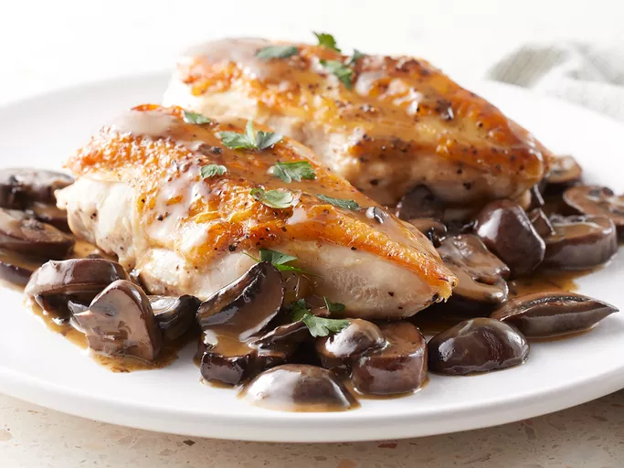

Chef John's Chicken and Mushrooms

Chicken and Mushrooms Ingredients
This chicken and mushrooms recipe video is an experiment in extreme self-control;
I wanted to challenge myself to make a chicken and mushrooms recipe using only chicken and mushrooms.
- 2 chicken breast halves, boneless, skin-on
- 2 tablespoons olive oil
- 8 ounces fresh mushrooms, sliced 1/4 inch thick
- 1 pinch salt
- ½ cup water
- 1 tablespoon butter
- Salt and ground black pepper to taste
How to prepare the chicken and mushrooms
- Gather all ingredients.
- Preheat oven to 400 degrees F (200 degrees C).
- Season chicken on all sides with salt and ground black pepper.
- Heat olive oil over medium-high heat in an ovenproof skillet.
Place chicken skin-side down in skillet and cook until browned, about 5 minutes.
- Turn chicken over; stir mushrooms with a pinch of salt into skillet.
Increase heat to high; cook, stirring mushrooms occasionally, until mushrooms shrink slightly, about 5 minutes.
- Transfer skillet to the preheated oven and cook until chicken is no longer pink in the center and the juices run clear, 15 to 20 minutes.
An instant-read thermometer inserted into the center should read 165 degrees F (74 degrees C).
Transfer chicken breasts to a plate and loosely tent with foil; set aside.
- Set skillet on the stovetop over medium-high heat; cook and stir mushrooms until brown bits start to form on the bottom of the pan, about 5 minutes.
Pour water into the skillet, and bring to a boil while scraping the browned bits off of the bottom of the pan.
Cook until water is reduced by half, about 2 minutes. Remove from heat.
- Stir in any accumulated juices from the chicken into the skillet. Stir butter into mushroom mixture,
stirring constantly until butter is completely melted and incorporated.
- Season with salt and pepper. Spoon mushroom sauce over chicken and serve.